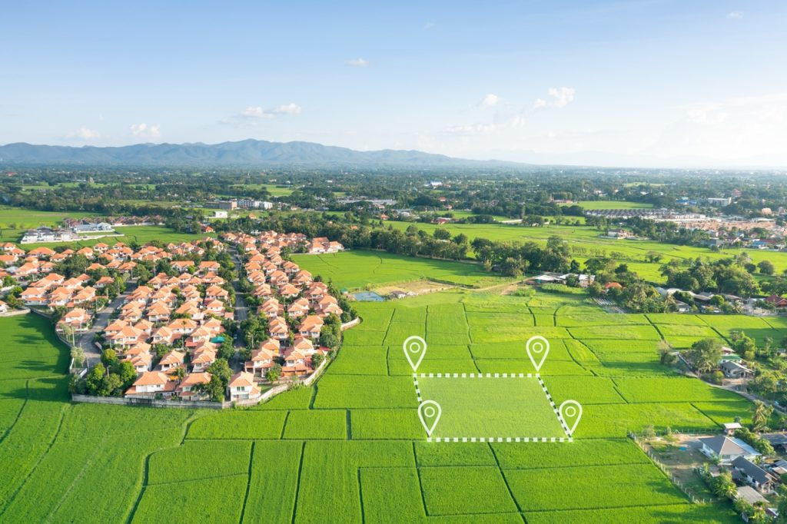

LAND ING d.o.o.
Mjerimo svijet
Preciznost u svakom koraku, inovacija u svakom mjerenju – vaša precizna točka u svijetu geodezije.
Zašto mi?
Ažurnost, preciznost, usluga od početka do kraja procesa. Poštujemo rokove jer preuzimamo projekata koliko smo kapacitirani za odraditi
- 12+godina iskustva u geodeziji i geoinformatici
- 100%preciznost u svim geodetskim mjerenjima
- 70zadovoljnih klijenata
- 8+specijaliziranih geodetskih usluga
Tvrtka smo sa značajnim iskustvom u geodeziji i geoinformatici, specijalizirana za pružanje vrhunskih geodetskih rješenja, a naš tim ima dugogodišnji niz odrađenih projekata u svim segmentima geodetskog inženjerstva poput geodetskih elaborata katastarske geodezije i zemljišne knjige, inženjerske geodezije (geodezije na gradilištima), aerofotgrametrije (snimanje dronovima), 3D laserska skeniranja i GIS-evi (geonformacijski sustavi). Geodetske usluge pružamo po cijeloj RH. Također, bavimo se i posredovanjem pri kupnji nekretnina kao i ishođenje uporabne dokumentacije kako biste oplemenili svoju nekretninu.
- Više od deset godina iskustva u geodeziji, sada u novom poglavlju
- Kompaktan tim s velikom posvećenošću svakom detalju
- Stručnost utemeljena na preciznosti i inovaciji
- Partner kojem možete vjerovati za točna i pouzdana rješenja
Usluge
Naš tim stručnjaka pokriva sve segmente geodetskog inženjerstva, uključujući:
Geodetske elaborate katastarske geodezije i zemljišne knjige
Pružamo sveobuhvatne usluge izrade geodetskih elaborata, od ažuriranja katastarskih podataka do unosa u zemljišne knjige, kako bismo osigurali točnu i zakonitu evidenciju nekretnina. U Hrvatskoj postoji nekoliko vrsta geodetskih elaborata katastarske geodezije, a svaki ima specifičnu namjenu. Evo kratkog pregleda glavnih vrsta:
-

Parcelacijski elaboratSluži za diobu (parcelaciju) postojećih čestica na manje dijelove ili za spajanje više čestica u jednu ili više novih. -
 Upis objektaKoristi se za upis objekata (zgrada, gospodarskih objekata) u katastar i zemljišnu knjigu. Obuhvaća detaljno mjerenje, analizu uporabnih akata sa svrhom konzistentne evidencije Vaše nekretnine u registrima.
Upis objektaKoristi se za upis objekata (zgrada, gospodarskih objekata) u katastar i zemljišnu knjigu. Obuhvaća detaljno mjerenje, analizu uporabnih akata sa svrhom konzistentne evidencije Vaše nekretnine u registrima. -
 Elaborat za evidentiranje promjena oblika ili površine česticeOvim elaboratom se ispravlja površina i oblik i evidentira stvarno stanje Vaše parcele u katastru i zemljišnoj knjizi.
Elaborat za evidentiranje promjena oblika ili površine česticeOvim elaboratom se ispravlja površina i oblik i evidentira stvarno stanje Vaše parcele u katastru i zemljišnoj knjizi. -
 Geodetski elaborat za legalizacijuOvaj elaborat koristi se za legalizaciju bespravno izgrađenih objekata. Sadrži precizno snimljene podatke o položaju, površini i visini građevine, te omogućava ishođenje uporabnog akta.
Geodetski elaborat za legalizacijuOvaj elaborat koristi se za legalizaciju bespravno izgrađenih objekata. Sadrži precizno snimljene podatke o položaju, površini i visini građevine, te omogućava ishođenje uporabnog akta. -
 Geodetska situacija za projektiranje kuća i zgradaGeodeti su prvi i zadnji na gradilištu. Geodetska podloga, odnosno 3D model terena je preduvjet za projektiranje kod ovlaštenih projektanata građevinske i arhitektonske struke. Nakon ishođenja dozvola, pratimo Vaše gradilište u nekoliko faza
Geodetska situacija za projektiranje kuća i zgradaGeodeti su prvi i zadnji na gradilištu. Geodetska podloga, odnosno 3D model terena je preduvjet za projektiranje kod ovlaštenih projektanata građevinske i arhitektonske struke. Nakon ishođenja dozvola, pratimo Vaše gradilište u nekoliko faza -
 Etažiranje objekataNudimo usluge etažiranja stambenih i poslovnih objekata, omogućujući preciznu podjelu nekretnina na pojedinačne jedinice. Na taj način vlasnici i investitori odvajaju svoje stanove kao zasebne cjeline.
Etažiranje objekataNudimo usluge etažiranja stambenih i poslovnih objekata, omogućujući preciznu podjelu nekretnina na pojedinačne jedinice. Na taj način vlasnici i investitori odvajaju svoje stanove kao zasebne cjeline. -
 Posredovanje pri prodaji i kupnji nekretninaUz klasično posredovanje u kupoprodaji nekretnina, naš tim objedinjuje i stručne usluge iz područja katastarske geodezije, što nam omogućuje da vam ponudimo puno više od standardnih usluga posredovanja.
Posredovanje pri prodaji i kupnji nekretninaUz klasično posredovanje u kupoprodaji nekretnina, naš tim objedinjuje i stručne usluge iz područja katastarske geodezije, što nam omogućuje da vam ponudimo puno više od standardnih usluga posredovanja.
Posebne usluge
Inženjerska geodezija (geodezija na gradilištima)
Naši stručnjaci pružaju geodetsku podršku na gradilištima, precizno postavljajući mjerenja za temelje zgrada, konstrukcije, ceste, tunele i druge građevinske projekte kako bi svi elementi bili usklađeni s građevinskim projektima.
Aerofotogrametrija (bespilotne letjelice)
Koristimo najmoderniju tehnologiju snimanja terena iz zraka putem dronova, što omogućuje brz i precizan uvid u teren za projekte mapiranja, praćenja kubatura i istraživanja terena.
3D lasersko skeniranje
S pomoću laserskog skeniranja pružamo detaljne 3D modele objekata i terena. Omogućujemo klijentima preciznu 3D vizualizaciju i analizu svakog aspekta projekta, poput rekonstrukcije postojećih zgrada, kulturne baštine ili modela terena i infratsrukture urbanog područja.
GIS (geoinformacijski sustavi)
GIS (Geoinformacijski sustavi) - prikupljanje, obrada, analiza i vizualizacija prostornih podataka. Izrada digitalnih karata, prostorne analize i georeferenciranje za vaše projekte.
Cijene
* Navedene cijene su orijentacijske. Kontaktirajte nas za besplatnu ponudu prilagođenu vašem projektu.
| Usluga | Cijena | Rok izrade |
|---|---|---|
| Elaborat upisa objekta | od 500 € | 7-14 dana |
| Parcelacija zemljišta | od 500 € | 14-21 dan |
| Etažiranje | od 400 € | 10-15 dana |
| Iskolčenje građevine | od 300 € | 1-3 dana |
| Iskolčenje (određivanje) međe | od 200 € | 1-3 dana |
| Geodetski elaborat za legalizaciju | od 500 € | 5-10 dana |
Lokacije
Poslovnice: Osijek i Zadar. Područje poslovanja: Zadarska, Šibensko-kninska, Zagrebačka i Osječko-baranjska županija.

Kontaktirajte nas sa povjerenjem!
- Poslovnice
- Osijek i Zadar
- Područje poslovanja
- Zadarska, Šibensko-kninska, Zagrebačka i Osječko-baranjska županija
- office@landing.hr
Molimo nazovite prije dolaska - Telefon
- tel. +385 92 233 5366
Za klijente i partnere. Radnim danima od 08h do 17h - OIB
- 30446646311
- IBAN
- HR1123400091111293529